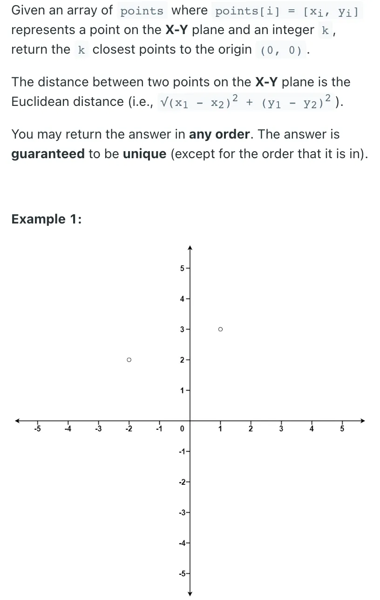
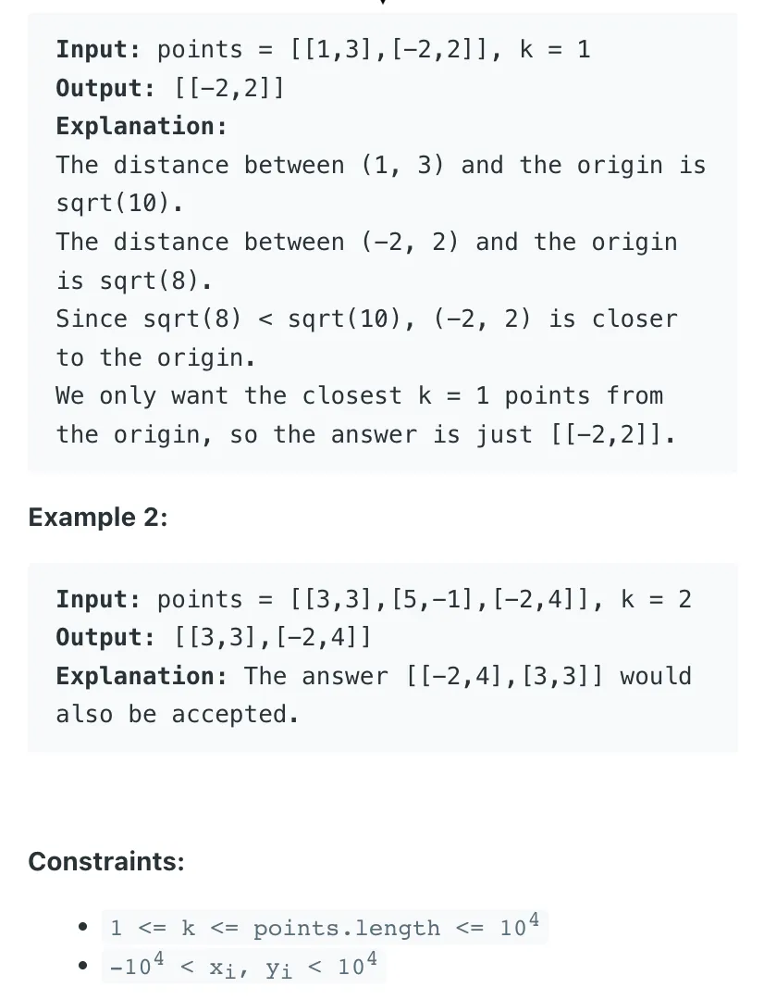

973. K Closest Points to Origin
考過的公司：Bytedance、tiktok
Question


✍🏽 My Solution
Solution #1 [王爭]
Runtime: 46 ms, faster than 49.81% of Java online submissions for K Closest Points to Origin.
Memory Usage: 120.6 MB, less than 5.34% of Java online submissions for K Closest Points to Origin.
class Solution {
public int[][] kClosest(int[][] points, int k) {
PriorityQueue<int[]> pq = new PriorityQueue<int[]>((array1, array2) -> (array2[0] - array1[0]));
for (int i = 0; i < k; ++i) {
pq.offer(new int[]{points[i][0] * points[i][0] + points[i][1] * points[i][1], i});
}
int n = points.length;
for (int i = k; i < n; ++i) {
int dist = points[i][0] * points[i][0] + points[i][1] * points[i][1];
if (dist < pq.peek()[0]) {
pq.poll();
pq.offer(new int[]{dist, i});
}
}
int[][] ans = new int[k][2];
for (int i = 0; i < k; ++i) {
ans[i] = points[pq.poll()[1]];
}
return ans;
}
}